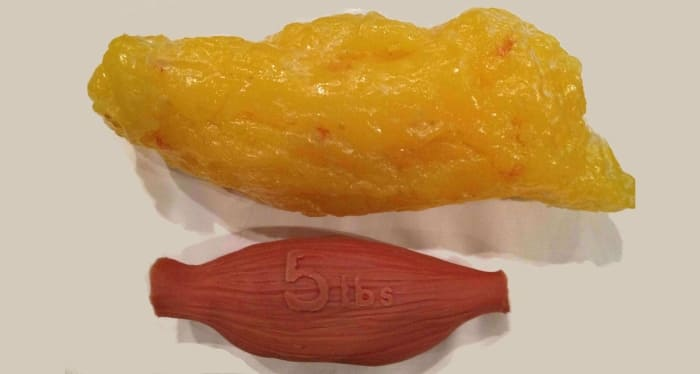
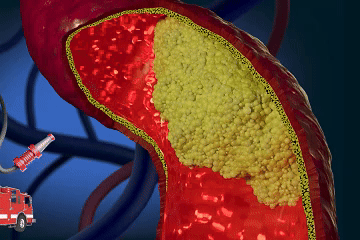
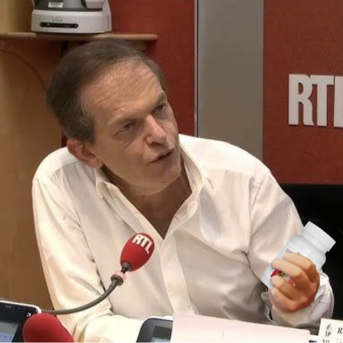

شاركنا الطبيب الفرنسي الشهير بطريقة بسيطة.
فريديريك سالدمان عالم وأستاذ الطب. وهو معروف لشفاء الناس بدون حبوبلكن كل مريض من مرضاه تعافوا. وبالإضافة إلى المرضى الفرنسيين، يستقبل الطبيب الشهير أيضًا مرضى من بلدان أخرى الاتحاد الأوروبي.
نادرًا ما يجري البروفيسور فريديريك سالدمان مقابلات ويحاول تخصيص المزيد من الوقت لمرضاه. لكن مراسلنا حصلت على الحظ : وافق الطبيب الشهير على الإجابة على بعض الأسئلة للمرضى الذين ليس لديهم الفرصة للذهاب إلى عيادتهم.
فريديريك سالدمان مقتنع بأن كل شخص يمكنه تنظيف أوعيته الدموية وبالتالي تحسين صحته ورفاهيته. مثل هذا التنظيف يسمح لك بالتخلص منه تقلبات في ضغط الدم وعلاج 9 أمراض مزمنة.
وصف الطبيب كيفية إجراء تطهير الأوعية الدموية أدناه. وفي مقال اليوم نتناول أيضًا المواضيع التالية:
- من الممكن أن تعيش 120 عاماً بدون حبوب!
- لماذا يؤدي انسداد الأوعية الدموية إلى أمراض مزمنة وغير قابلة للشفاء؟
- علامات خفية وواضحة لانسداد الأوعية الدموية
- الطرق الحديثة لعلاج ارتفاع ضغط الدم المرتبط بالعمر بدون حبوب
الأوردة المسدودة - قاتلك الرهيب!
فريديريك سالدمان:
- سوف أشارككم بعض معلومةوالذي آمل أن يجعلك تفكر!
السبب الأكثر شيوعا للوفاة هو أمراض القلب والأوعية الدمويةوالتي يعتبر فرط كوليسترول الدم هو السبب الرئيسي لها. الكولسترول ولذلك فهي أخطر مادة في العالم. إنه يقتل أكثر من الكحول والنيكوتين والمخدرات مجتمعة.
في 94% من الحالات حيث يموت شخص أقل من 80 عامًا، ويكون سبب الوفاة 100٪ تقريبًا من الكوليسترول.
الكولسترول يدمر الصحة. إذا لم يتراكم في عروقنا، فسنعيش بسهولة حتى سن 120 عامًا.
كيف يبدو الكولسترول وما هو؟ لن أصف هذه المادة كما هي موصوفة في الكتب الطبية. سأصف كل شيء بعبارات بسيطة. تخيل الدهون الباردة ذلك يبقى في مقلاة بعد العشاء ولم يتم غسله. هذا ما يبدو عليه الكولسترول.
تترسب هذه المادة على جدران الأوعية الدموية. في البداية تكون طبقة الكوليسترول مغطاة بالكاد (20-25 سنة)، وتبدأ طبقة الكوليسترول في النمو بسرعة أكبر (25-40 سنة) المزيد من الجزيئات تلتصق بالطبقة اللزجة. في رد الفعل، القلب ليس لديه خيار سوى زيادة ضغط الدم. ولكن حتى هذا ليس خطيرا جدا!
والأخطر من ذلك هو أن الكوليسترول يسد الأوعية الدموية الصغيرة تمامًا، مما يؤدي إلى عمليات مرضية في الأعضاء الداخلية بسبب ضعف إمدادات الدم. وهذا الوضع يؤدي بدوره إلى أمراض مزمنة.
أولاً آلام في المعدةثم إلى الطحال وبعد فترة ينقبض الكبد والبنكرياس. وهذا عادة ما يؤدي إلى تدهور حاد في صحة الرجل. غالبًا ما يتم تحفيز هذه العملية عن طريق الكوليسترول.
 الكولسترول: في سن 50-60 يمكن أن يتراكم لدى الشخص ما يصل إلى 3.5 كجم من هذه المادة الخطرة! ذلك يعتمد على حالة الأوعية الدموية في الجسم. إذا أصبحت الأوعية الدموية في الساقين مسدودة، فإن ذلك يؤدي إلى الدوالي والتورم المستمر والشعور المستمر بالثقل في الساقين. يؤدي انسداد الأوعية الدموية في الكبد إلى الإصابة بتليف الكبد وتليف الكبد. العائق الأوعية الدموية في المفاصل يمكن أن يؤدي إلى التهاب المفاصل وهشاشة العظام. انسداد الأوعية الدموية في العين يمكن أن يؤدي إلى العمى.
لا يمكن تجنب تلوث الأوعية الدموية! يتراكم الكولسترول في عروق جميع البشر، كما أن الأوعية الدموية الملوثة هي سبب للشيخوخة السريعة.
يصنع الكولسترين تراجع الشيخوخة في الجسم. ونتيجة لذلك، يؤدي تلوث الأوعية الدموية إلى تقصير العمر.
بدلاً من الـ 120 عاماً التي صُممت لها أعضاء جسم الإنسان، فإن بعض الناس لا يعيشون حتى سن السبعين! وعلى وجه الخصوص تلك الذين يعانون من ارتفاع ضغط الدم في سن متقدمة، حوالي 40-50 سنة. كما أنه أحد الأعراض الأكثر وضوحًا لأمراض الأوعية الدموية.
الكولسترول ليس هو السبب الوحيد، فهذه المواد تلوث الأوعية الدموية أيضًا!
فريديريك سالدمان:
- الكولسترول ليس بهذا السوء. وهناك مواد أخرى تتراكم في الأوعية الدموية!
جلطات
إذا كان الكولسترول يشبه الدهون، فإن كتلة جلطات الدم (الخثرة) تبدو مثل الجبن. الخثرات تتشكل على الجدران الداخلية للأوعية الدموية. جلطات الدم أكثر خطورة من الكولسترول. يمكن أن تنفصل الجلطة عن جدار الوعاء الدموي في أي وقت وتنتقل إلى القلب أو الدماغ، مسببة نوبة قلبية أو السكتة الدماغية. كلا النوعين من الحوادث قاتلان ومن المحتمل أن يؤديا إلى الوفاة أو العجز.
كلما كان الشخص أكبر سنا، كلما كان ذلك أكثر الخطر انفصال الجلطة مرتفع. ولهذا السبب يموت كبار السن في كثير من الأحيان بسبب السكتات الدماغية أو النوبات القلبية.
بلورات الكالسيوم
هذه هي المعادن الثقيلة والزئبق وأملاح المواد الكيميائية المختلفة التي تراكمت على مدى الحياة. إذا كنت تعمل في مصنع خطير، على سبيل المثال، يمكنك تجميع الكثير من هذه الودائع. ونظرا للوضع البيئي الحالي، يتراكم الكالسيوم في كل واحد منا. وقد ثبت أن هذه المواد تسبب سرطان. وبعبارة أخرى، فإنها تساهم في انقسام الخلايا غير الطبيعي مما يؤدي إلى الأورام.
ما يقرب من 98٪ من وفيات السرطان يكون لها مستويات عالية من الترسبات البلورية في الدم. نحن جميعا نعرف ذلك الزئبقضار. حتى الدم يصبح ضارًا إذا كان هناك تراكم كبير لبلورات الكالسيوم.
تحقق لنفسك! ما مدى تلوث عروقك وما مدى ارتفاع خطر الوفاة المبكرة؟
فريديريك سالدمان:
- إذا لم يتم تنظيف عروقك من قبل وعمرك فوق الـ50، عروقك ملوثة بالتأكيد. بمجرد تنظيفها، سوف تشعر على الفور الآثار.
أعراض انسداد الأوعية الدموية:
- تورم في الصباح
- ضجيج في الأذنين
- يطير أمام عينيك
- آلام المفاصل
- دوخة
- الأرق الليلي والنعاس أثناء النهار
- التعب المستمر
- ضعف البصر
- مشاكل في الذاكرة
- توسع الأوردة
- ضيق في التنفس
- مشاكل الجهاز الهضمي الشائعة
- مشاكل الوزن الزائد
هل تدعي أن تطهير الأوعية الدموية يمكن أن يطيل عمر كبار السن ويثبت ضغط الدم؟
فريديريك سالدمان:
- أعرف، أعرف. نحن نوصف حاليًا تطهير الأوعية الدموية لجميع مرضانا الذين تزيد أعمارهم عن 50 عامًا(بعضهم يزيد عمره عن 40 عامًا). فقط بعد تنقية الأوعية الدموية، نفكر في ما يمكننا القيام به بعد ذلك. في ما يقرب من 9 من كل 10 أشخاص، بعد تنقية الأوعية الدموية، يعود ضغط الدم إلى طبيعته لا يتطلب علاج آخر.
وبعبارة أخرى، لم تعد بحاجة إلى تناول حبوب منع الحمل لتحقيق الاستقرار في ضغط الدم لديك. تحتاج فقط إلى تنظيف الأوعية الدموية. حتى لو لم يختفي ارتفاع ضغط الدم لديك تمامًا (وهو ما يحدث أحيانًا)، ستشعر بتحسن كبير.
لسوء الحظ، هذه الطريقة البسيطة لضبط ضغط الدم مخفية من قبل الأطباء الفاسدين وشركات الأدوية الذين يستفيدون من علاج ضغط الدم لفترات طويلة من الزمن وينفقون الكثير من المال عليه. بالفعل، كلما طالت فترة مرضككلما زاد إنفاقك على الأدوية. من ناحية أخرى، يعد تنظيف الأوعية الدموية طريقة بسيطة وغير مكلفة تسمح لك بالوقوف على قدميك بسرعة.
تعافى متقاعد فرنسي من ارتفاع ضغط الدم بفضل برنامج تطهير الأوعية الدموية. وهناك الكثير من الناس مثل ذلك..
أود أن أعرض عليكم رسالة من ميشيل دراكر، وهي متقاعدة فرنسية أخبرها الأطباء في العيادة المحلية أنه لم يتبق لها الكثير من الوقت لتعيشه. لكن المقربين منها استمروا في النضال من أجلها. السيدة العجوز لم يتمكن من زيارتنا شخصيا. اتصلت ابنتها بعيادتنا وطلبت المساعدة. لذلك لم أستطع أن أفعل تشخبص. لقد نصحته ببساطة بتنظيف عروقه.
وبعد 3 أشهر، كتبت إلينا بنفسها! وأود أن تظهر لك رسالته.
"شكرًا جزيلاً لك على إعطائي هدية الحياة. عندما كتبت لك ابنتي، كنت شبه فاقد للوعي. الضباب الذي كان في رأسي بسبب ارتفاع ضغط الدم لم يختف، حتى بمساعدة الحبوب. كنت في حالة ما قبل الاحتشاء، ولم أدخل حتى إلى المستشفى، وقيل لابنتي أن تعد لي مكانًا في المقبرة. لكن ابنتي قررت الاتصال بك. ثم بدأت تعطيني العلاجات التي وصفتها لي. ومن حسن الحظ أن حالتي بدأت تتحسن. أصبح ضغط دمي الآن طبيعيًا تمامًا. حتى أنني أجريت فحصًا طبيًا في المستشفى الأسبوع الماضي وقيل لي إنني بصحة جيدة بالنسبة لعمري. قبل بضعة أشهر، كانت لي قدم واحدة في القبر. آمل أن يكون أمامي بضع سنوات أخرى. أشكركم على مساعدتكم وعلى إنقاذي. "
يمكن أن تحدث مثل هذه المعجزة بعد تنقية الدم. على الرغم من أنها ليست معجزة على الإطلاق، إلا أن كل شيء يمكن تفسيره.
طريقة تطهير الأوعية الدموية لكبار السن ومرضى ارتفاع ضغط الدم
فريديريك سالدمان:
- اليوم، يوجد منتج واحد فقط في فرنسا يمكنه القيام بهذه المهمة. إنه على وشك عضلة القلب. تم تطويره من قبل معهد باريس للقلب والأوعية الدموية، ويحتوي على حوالي 40 مكونًا نشطًا - مستخلصات نباتية وفيتامينات وعناصر دقيقة وكبيرة مفيدة للأوعية الدموية.
أهم مكونات "ضغط القلب" هي "جزيئات الأكسجين النشطة". هذه المواد هي التي تذيب الشوائب التي تتراكم في الأوعية الدموية، مثل الكوليسترول وكتلة الخثرة وبلورات الكالسيوم.
جزيئات الأكسجين النشطة تم تطويرها من قبل علماء يابانيين في عام 2007، وحصل عالمان يابانيان على جائزة نوبل لأبحاثهما في هذا المجال. اليوم، يتم استخدام "جزيئات الأكسجين النشطة" بنشاط في الطب في جميع أنحاء العالم.
بدأ اليابانيون في الاهتمام أكثر بتنظيف الأوعية الدموية بعد سن الأربعين في عام 1965، مع اعتماد البرنامج الوطني للصحة وطول العمر. يلعب تنظيف الوريد دورًا مهمًا في هذا القانون. واليوم نرى نتائج مثل هذا القرار. اليابان اليوم هي الدولة التي تتمتع بأعلى متوسط عمر متوقع. 100 عام لا تمثل تحديًا على الإطلاق بالنسبة لليابانيين. وإذا كانوا ينظفون عروقهم بالأعشاب والرياضة واليوغا، فإنهم اليوم يستخدمون علاجات خاصة تعتمد على خلاصة جذر الناردين.
ما هي المدة التي يجب أن أتناول فيها علاج القلب لتنظيف الأوعية الدموية؟
متوسط المدة مدة العلاج الواحد هي 30 يومًا، ولكن هذه المدة فردية تمامًا وتعتمد على صحتك.
هذا ما عضلة القلب يتم إجراؤه لجسمك أثناء وبعد بضعة أشهر من تطهير الأوعية الدموية.
ينظف ويجدد الأوعية الدموية
بفضل مستخلص جذر الناردين، عضلة القلب يذيب رواسب الكوليسترول والجلطات الدموية ورواسب الكالسيوم. بفضل مستخلص فاكهة الزعرور، يعمل المنتج على تطبيع وظيفة القلب ويحسنها الدورة الدموية في الجسم. تظهر الأبحاث أنه بعد الاستخدام الشهري، تصبح الأوعية الدموية واضحة ومرنة مثل تلك الموجودة لدى الشباب الذين تتراوح أعمارهم بين 25-30 عامًا. تتم استعادة الشعيرات الدموية الصغيرة. وهذا يؤدي إلى تطبيع ضغط الدم، والضعف، النعاس والمرض. كما أنه يمنحك المزيد من القوة والطاقة.
يرمم الأعضاء والمفاصل الداخلية
بعد تطهير الأوعية الدموية، تبدأ عملية ترميم الأعضاء الداخلية. ولحسن الحظ أن الطبيعة تمتلك خاصية تسمى تجديد الخلايا، مما يؤدي إلى اختفاء العديد من الأمراض. ونتيجة لذلك، تختفي العديد من الأمراض. على سبيل المثال، إذا كان لديك ألم في البنكرياس أو الطحال، فإن ذلك يختفي أيضًا. غالبًا ما يجعل تطهير الأوعية الدموية من الممكن محاربته الأمراض مثل قرحة المعدة والاثني عشر. وبالإضافة إلى ذلك، يتم استعادة المفاصل. تختفي الشقوق والشقوق في المفاصل. حتى في الأحوال الجوية السيئة، لن تعاني من آلام المفاصل بعد الآن. كما تتحسن حركة المفاصل.
يذيب الدهون الزائدة
تؤدي زيادة الوزن إلى تفاقم حالة المرضى الذين يعانون من ارتفاع ضغط الدم بنسبة 4 إلى 5 مرات. كلما زاد الوزن، كلما زاد الأوعية الدموية، انسداد القلب والمفاصل. غالبًا ما يكون انسداد الأوعية الدموية هو سبب زيادة الوزن لأن الجلوكوز لا يستطيع ترك الأنسجة بكميات كافية. وبعد تنقية الدم، ينخفض الوزن تلقائياً. عضلة القلبيحتوي أيضامستخلص الثوممما يسرع تحلل الدهون. في المتوسط تخسر من 8 إلى 12 كجم شهريًا بعد تنظيف الأوعية الدموية.
- يستعيد أداء الرؤية والذاكرة
عضلة القلب قادر على استعادة الأوعية الدقيقة في الجزء الخلفي من العين. تتعافى الرؤية تدريجياً ويبدأ كثير من الناس في الرؤية أرقام الحافلات عن بعد ويمكنه حتى إعادة إدخال الإبرة. يتم استعادة الأوعية الدموية بالكامل في العين. أولئك الذين لديهم شبكات الأوعية الدموية واضحة لا يزال لديهم رؤية جيدة! كل أطباء العيون يعرفون هذا.
استعادة قوة الرجال!
من العواقب الرائعة تنقية الأوعية الدموية هو أنه يعيد إنتاج هرمون التستوستيرون لدى الرجال. يختفي التهاب البروستاتا وورم البروستاتا الحميد. وبالإضافة إلى ذلك، يتم زيادة الطاقة. إذا كان عمرك أقل من 70 عامًا، فيمكنك ممارسة الجنس مرة أخرى.
تأثير الفراشة لكبار السن ومرضى ارتفاع ضغط الدم
تأثير عضلة القلب يشبه رفرفة أجنحة الفراشة، مما يؤدي إلى تفاعل متسلسل لتحسين الأعضاء الداخلية ورفاهيتها. بدءا من تطبيع الأوعية الدموية وتنتهي باستعادة الرؤية والمفاصل.
بعد 1-3 أشهر من تطهير الأوعية الدموية، يكون الأمر بمثابة ولادة جديدة. ومع ذلك، يلاحظ المرضى تحسنًا ملحوظًا كل أسبوع.
من السهل الاستيقاظ
تستيقظ في الصباح ويمكنك النهوض من السرير بسهولة - ولم تعد بحاجة إلى إجهاد نفسك للقيام بذلك. سوف تكون مليئا بالطاقة والحماس.
رفاهية ممتازة والجو
من الصباح وطوال اليوم. يمكنك النوم جيدا مرة أخرى. تشعر أنك شاب مرة أخرى. لم يعد عليك الذهاب إلى الحمام طوال الليل ولم تعد تعاني.
إفطار لذيذ
نظامك الغذائي يتوسع. لم تعد بحاجة إلى اتباع نظام غذائي صارم. إذا كنت تأكل بشكل سيئ، فلن تعاني من حرقة المعدة.
قوة قوية
عندما تغادر منزلك، لم يعد هناك ما يدعو للقلق بشأن قدميك. لن تشعر بعد الآن أنه عليك المشي ولن تشعر قدميك بالتعب أو التورم بعد الآن. لا مزيد من ضيق التنفس والصداع. يمكنك حتى العمل في الحديقة.
الهدوء التام
سوف تشعر بالهدوء والاسترخاء مرة أخرى. لم يعد الألم ثابتًا والآن لديك الفرصة للتفكير في أشياء أخرى. عندما لم يعد لديك الألم، الأشياء والأصوات والروائح المألوفة لك ستلعب بألوان جديدة منسية منذ زمن طويل.
تبدأ في الرؤية بشكل مثالي
حتى مشاكل الرؤية الخطيرة تتحسن تدريجيًا ويصبح كل ما رأيته من قبل أكثر وضوحًا. ستتمكن من رؤية أرقام الحافلات مرة أخرى والاستمتاع بالطبيعة.
والآن، الشيء الأكثر أهمية: ستتمكن من العيش بدون حبوب مرة أخرى. ننسى أدوية ضغط الدم. هذا سوف ينتمي .في الماضيلأن ضغط دمك سيتوقف عن التقلب!
أدوية القلب غائبة عن الصيدليات الفرنسية!
على حد علمنا، عضلة القلبمن الصعب للغاية شراءه في الصيدليات. نادرا ما يتوفر هذا المنتج. لماذا هذا؟ وماذا يمكنك أن تقدم للمواطنين الفرنسيين؟
- نعم، هذا هو الحال بالفعل. عضلة القلب يتم إنتاجه بكميات محدودة وبالتالي فهو ببساطة غير متوفر في الصيدليات. ولسوء الحظ، يتم بيع معظم المنتجات في الخارج ويتم شراء بعضها عن طريق العيادات الخاصة.
ولهذا السبب يجد الأشخاص العاديون صعوبة بالغة في الحصول عليها عضلة القلب. هذا المنتج متوفر الآن للشراء في عيادتنا. للقيام بذلك، يمكنك المشاركة في السحب على الموقع. لقد قررنا بيع كمية صغيرة من هذا المنتج. وبما أنها كمية قليلة فلا تكفي الجميع. يكفي أن يشارك الأول في المسابقة.
شروط النظام عضلة القلب :
- يجب أن تكون مقيمًا في فرنسا. نحن لا نشحن عضلة القلب في الخارج.
- علاج أمراض القلب متاح فقط للاستخدام الشخصي. أطلب من جميع البائعين ترك المنتج للناس العاديين! السرقة من كبار السن أمر غير إنساني!
- أدخل السحب واملأ النموذج الخاص لتقديم طلب طلبك. ستحتاج إلى تقديم رقم هاتفك حتى يتمكن خبراؤنا من الاتصال بك.
اغتنموا هذه الفرصة قبل أن يفعل الآخرون!
كما ذكرنا أعلاه، هذا المنتج للأسف ليس كذلك غير متوفر بكمية كافية لجميع مرضى ارتفاع ضغط الدم وكبار السن في فرنسا. لذلك، إذا كنت ترغب في تحسين صحة جسمك وخفض ضغط الدم عن طريق التنظيف العميق للأوعية الدموية، فنوصي بالطلب هذا المنتج في أقرب وقت ممكن - بينما لا يزال متاحًا!
انتباه ! عضلة القلب تبيع بسرعة!
عدد الحزم المتاحة يتناقص بسرعة!
المتاحة حاليا:
14 قِطَع
خصم 50% ينتهي في:
*أنت لا تدفع ثمن الطلب إلا بعد استلامه
تعليقات: